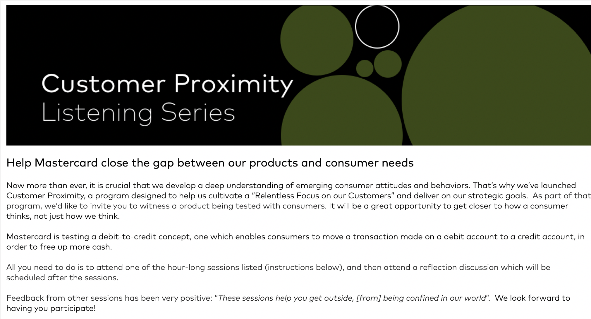
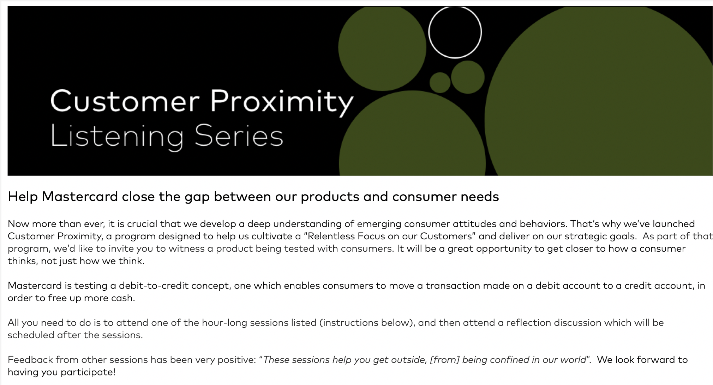

Mastercard Internship
Duration:
4 weeks, Summer 2020 (Shortened due to COVID-19)
Team:
NYC Office, Product and Experience Design Team
Role:
UX Design Intern
Overview—
In summer 2020, I had the opportunity to work at Mastercard as a UX Design Intern. Despite the pandemic cutting my time there to just 4 virtual weeks, I was still grateful for the experience! For my full intern presentation, view this PDF.
Implementation Guide—
Ensuring the future of online checkout is a good experience.
I joined at the time the Product and Experience Design Team (PXD) was creating the Implementation Guide for merchants to use Click to Pay, Mastercard's smart and secure online payment method.
Click to Pay has 2 types of users, consumers as well as merchants. It is Mastercard's best interest to ensure the consumer experience is user friendly so they continue to use the service and merchants will want to implement Click to Pay, generating revenue. Implementation is the merchant's responsibility, so this guide was created to ensure a good experience for the end consumer and consequently, all parties.
Click to Pay has 2 types of users, consumers as well as merchants. It is Mastercard's best interest to ensure the consumer experience is user friendly so they continue to use the service and merchants will want to implement Click to Pay, generating revenue. Implementation is the merchant's responsibility, so this guide was created to ensure a good experience for the end consumer and consequently, all parties.
Deliverables—
Examples of the pages I worked on.
The link to the full guide is not public but here is a glimpse of the pages I worked on. More examples of the guide and on my contributions can be found here!
Lessons I learned—
Keep iterating and getting feedback.
I worked closely with other designers and product managers on the content and visuals of the guide. We had bi-weekly syncs to provide + receive feedback. It was interesting to be apart of discussions that ranged from extremely detailed (word choice, colors) to big picture (purpose).
Customer Proximity—
Everyone benefits from understanding customers.
I helped create materials for Mastercard's internal initiative of Customer Proximity, which encouraged all employees to get closer to their customers and consumers.
Deliverables—
Even emails are an experience.
One deliverable I helped create was an email template to make notifying employees of Customer Proximity opportunities easier. To read about my process and the evolution of these materials, view this PDF.
 

This was the top half of email sent using the template! I cropped out potentially sensitive information.
Lessons I learned—
UX can be applied to anything.
Given the short duration of my internship, I didn't work on a feature or product following the traditional design process. Instead, I was involved with multiple projects at the same time.
But I still applied my design process to every deliverable. Even reading an email is an experience.
But I still applied my design process to every deliverable. Even reading an email is an experience.
Intern Challenge—
How might Mastercard help people during or after the pandemic?
During my time as a intern, I worked with 6 other interns to research and ideate how Mastercard products or services could be useful either during the global situation or afterwards during the rebuilding efforts.
Deliverables—
Help small businesses move into ecommerce.
Our final idea was: helping small businesses set up online shops that make it easy for their customers to support them by partnering with website builders like Squarespace, Shopify, etc., to offer Click to Pay as a quick, secure, and trusted payment method. To see our process and the research results, view this PDF.
Lessons I learned—
Designers bring everyone together.
I wanted to make sure my team’s idea was solving real problems for people so I suggested methods for research + facilitated discussions and ideation based on my experience with design thinking.
Overall, work was distributed among the whole team, but given everyone's hectic schedule, I took on more of a facillitator role by sending When2Meets and guiding our meetings. In addtion, I conducted surveys on UserZoom for primary research and to validate our final idea.
Overall, work was distributed among the whole team, but given everyone's hectic schedule, I took on more of a facillitator role by sending When2Meets and guiding our meetings. In addtion, I conducted surveys on UserZoom for primary research and to validate our final idea.
Reflections—
The experience of working with a whole team of designers, PMs, and content writers reinforced my belief in the power of different perspectives. Many issues were brought up and resolved during meetings where all parties were present.
Through numerious feedback session and iterations, I've learned that design is never done and by definition, is ambigious. I think a pro of working on a number of different projects instead of just one was being able to be curious and question more than one problem space.
Initially, I had the misconception that all of my work had to be from scratch. But after listening in on meetings and familiarizing myself with what the team has been doing, I learned how to effectively and efficiently build off of exisiting design systems, content, etc., and leveraging others' designs.
Through numerious feedback session and iterations, I've learned that design is never done and by definition, is ambigious. I think a pro of working on a number of different projects instead of just one was being able to be curious and question more than one problem space.
Initially, I had the misconception that all of my work had to be from scratch. But after listening in on meetings and familiarizing myself with what the team has been doing, I learned how to effectively and efficiently build off of exisiting design systems, content, etc., and leveraging others' designs.